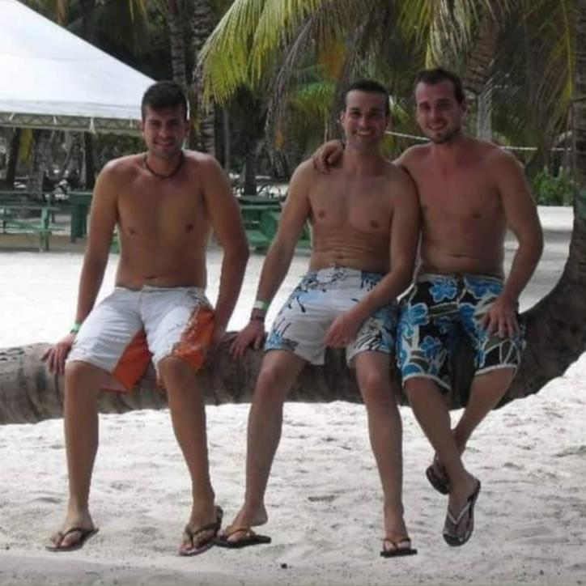
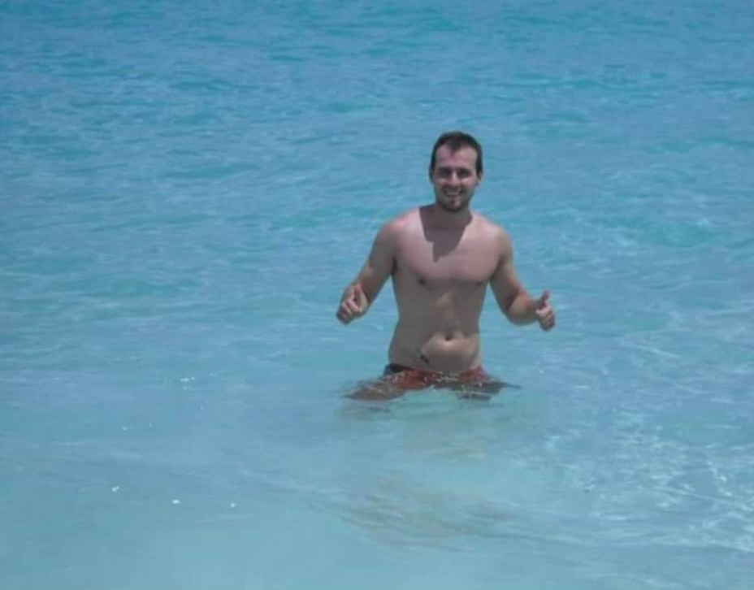
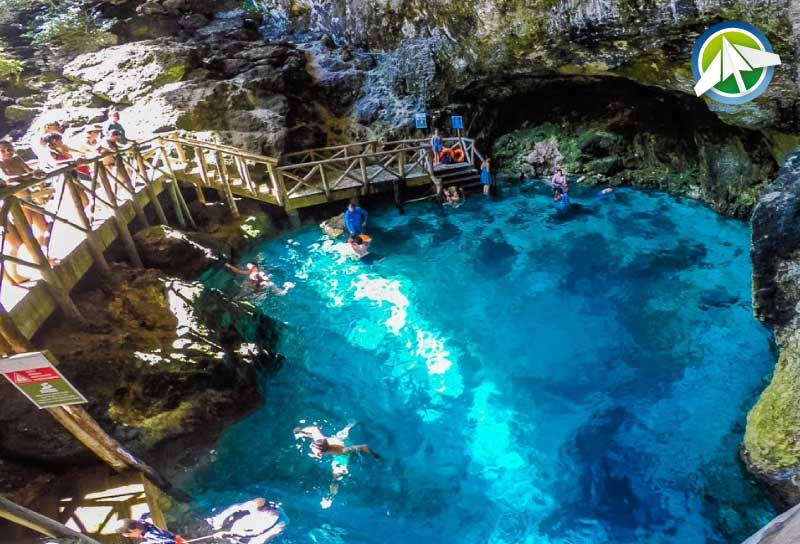
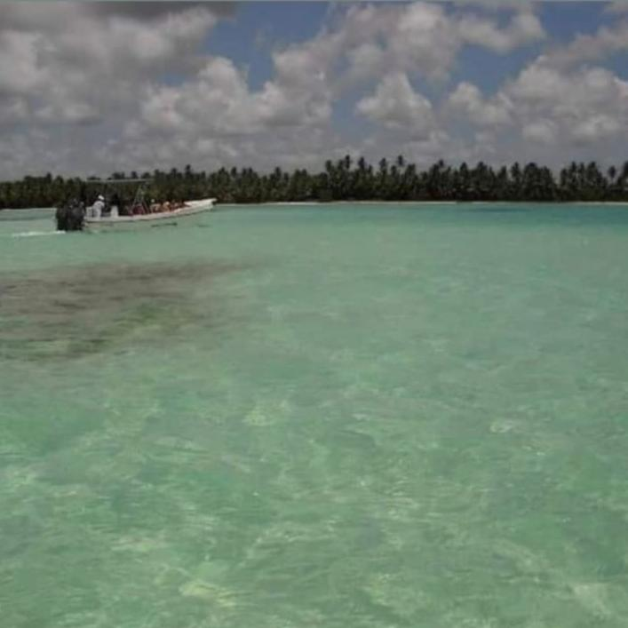
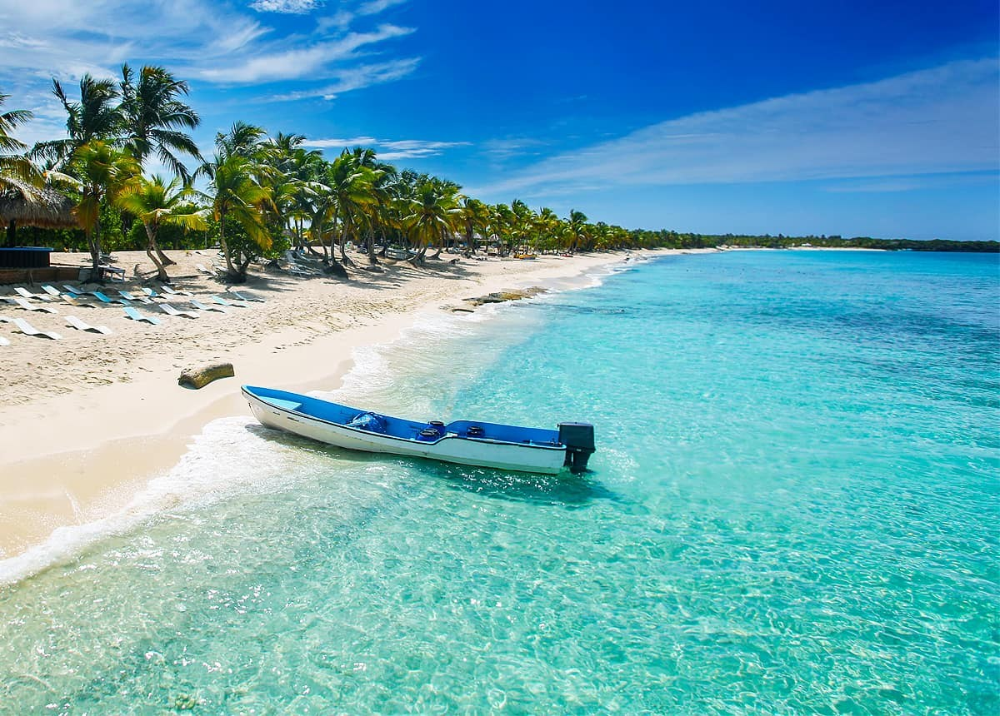
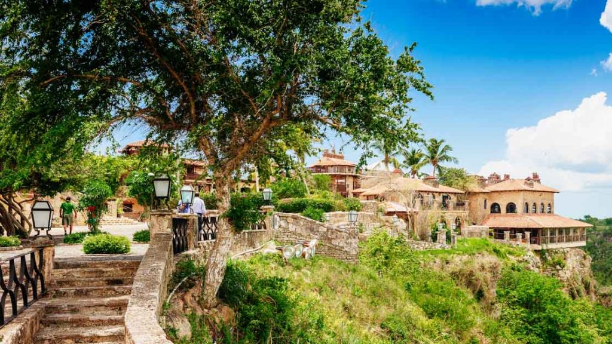
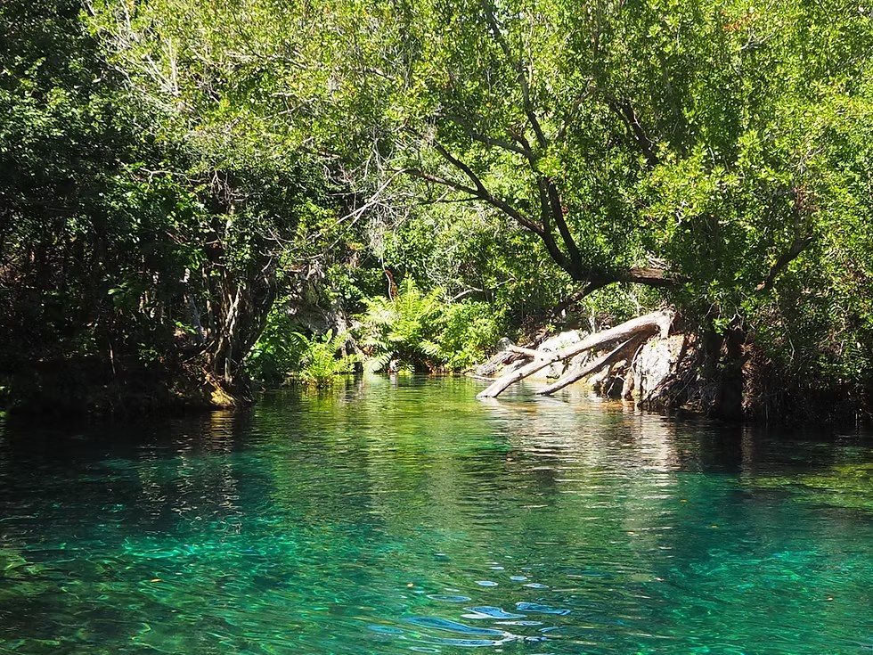
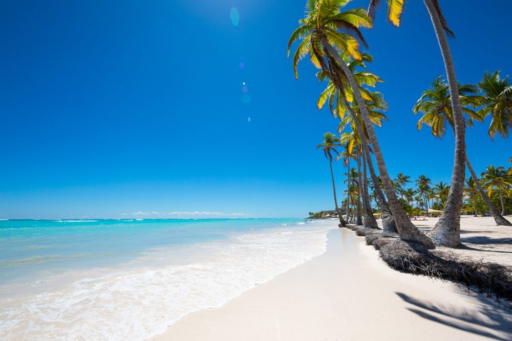
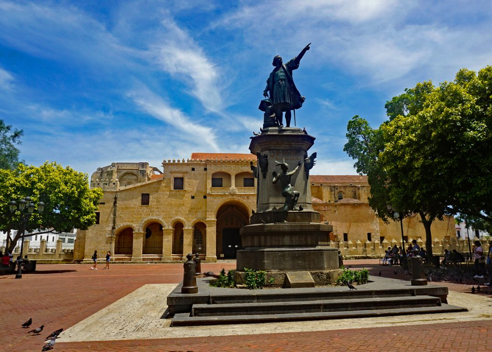
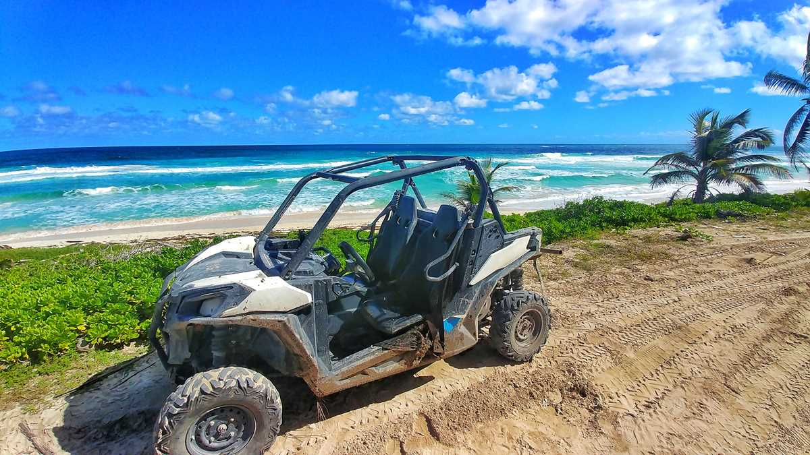

1. 🌴 Introducción
Punta Cana es el destino más famoso de la República Dominicana y uno de los más populares de todo el Caribe. Situada en el extremo este de la isla, tiene más de 50 km de playas de arena blanca bordeadas de cocoteros y aguas turquesas, protegidas en muchos tramos por arrecifes de coral.
Aunque mucha gente la asocia solo a los hoteles con todo incluido, Punta Cana da para mucho más: excursiones a islas paradisíacas como Saona y Catalina, cenotes y lagunas de agua dulce, rutas en buggy por el interior, el pueblo de artistas de Altos de Chavón o una escapada a la Zona Colonial de Santo Domingo, la primera ciudad europea de América.
3. 🏨 Dónde alojarse
🏖️ Playa Bávaro ⭐⭐⭐⭐⭐
⛵ Cap Cana ⭐⭐⭐⭐⭐
🌴 Uvero Alto ⭐⭐⭐⭐
🏘️ Los Corales y El Cortecito ⭐⭐⭐
Para un primer viaje, lo más cómodo es un todo incluido en Bávaro: tienes la playa delante, comida y bebida incluidas y las excursiones te recogen en el hotel. Antes de reservar, mira las opiniones sobre la playa del hotel (algunas tienen más oleaje o sargazo que otras).
🍽️ Restaurantes a la carta: En muchos resorts los restaurantes temáticos (no el bufé) hay que reservarlos el primer día. Pregunta en recepción nada más llegar.
💵 Propinas: Aunque esté todo incluido, es costumbre dejar alguna propina (1-2 USD) a camareros y personal de limpieza. Lleva billetes pequeños de dólar.
4. 🏝️ Qué ver

1. 🏖️ Playa Bávaro
Bávaro es la playa más famosa de Punta Cana y una de las más bonitas del Caribe. Son varios kilómetros de arena blanca y fina, cocoteros inclinados sobre el agua y un mar de color turquesa, tranquilo gracias al arrecife de coral que la protege.
Se puede pasear durante horas por la orilla, pasando de un hotel a otro. En la zona de El Cortecito y Los Corales hay restaurantes, bares de playa y puestos donde contratar paseos en barco o snorkel.

2. 🏝️ Isla Saona
La excursión más famosa desde Punta Cana. La isla Saona forma parte del Parque Nacional del Este y tiene algunas de las playas más espectaculares del país, como la de Canto de la Playa, con palmeras y aguas transparentes.
Normalmente se va en catamarán desde Bayahibe y se vuelve en lancha rápida, con una parada en la piscina natural: una zona de aguas poco profundas en medio del mar donde se ven estrellas de mar. El almuerzo y la bebida suelen estar incluidos.

3. 💧 Hoyo Azul
El Hoyo Azul es un cenote de agua dulce de un intenso color azul turquesa, rodeado por un acantilado de roca de más de 70 metros cubierto de vegetación. Se encuentra dentro del parque de aventura Scape Park, en Cap Cana.
Se llega tras un corto paseo por la selva y se puede nadar en sus aguas cristalinas. La entrada al parque incluye otras actividades como tirolinas, cuevas y senderos.

4. 🏄 Playa Macao
Playa Macao es una de las pocas playas de la zona sin grandes hoteles en primera línea. Es salvaje, con arena dorada, acantilados a los lados y olas que la convierten en el mejor sitio para surfear de Punta Cana, con varias escuelas de surf.
En la entrada de la playa hay chiringuitos donde comer pescado fresco frito con tostones. Es una parada habitual en las excursiones en buggy.

5. 🐠 Isla Catalina
La isla Catalina, frente a La Romana, es más pequeña y tranquila que Saona. Es famosa por sus fondos marinos: tiene uno de los mejores puntos de snorkel y buceo de la República Dominicana, con un arrecife lleno de corales y peces de colores.
La playa es preciosa, con arena blanca y aguas cristalinas. Muchas excursiones combinan la isla Catalina con una visita a Altos de Chavón.

6. 🏛️ Altos de Chavón
Altos de Chavón es una réplica de un pueblo mediterráneo del siglo XVI, construida en piedra en el siglo XX sobre un acantilado junto al río Chavón, dentro del complejo de Casa de Campo, en La Romana. Parece un pueblo antiguo de verdad.
Tiene calles empedradas, talleres de artesanos, tiendas, la iglesia de San Estanislao, un museo arqueológico y un gran anfiteatro de estilo griego que inauguró Frank Sinatra con un concierto. Las vistas del río desde el mirador son espectaculares.

7. 🌿 Reserva Ecológica Ojos Indígenas
Una reserva natural muy cerca del aeropuerto con un sendero entre la vegetación tropical que lleva a 12 lagunas de agua dulce alimentadas por un río subterráneo. Los taínos, los antiguos habitantes de la isla, las llamaban "ojos" de la tierra.
En algunas de ellas se puede nadar en aguas tranquilas y cristalinas. Es un plan perfecto para descansar un rato de la playa y conocer la naturaleza autóctona de la zona.

8. 🥥 Playa Juanillo
Playa Juanillo, en Cap Cana, está considerada una de las playas más bonitas de Punta Cana. Tiene arena muy blanca, aguas turquesas y tranquilas, y muchísimos cocoteros que crean la típica imagen de postal caribeña.
Está mucho menos masificada que Bávaro. Hay restaurantes y beach clubs donde pasar el día, y es un lugar muy popular para bodas en la playa.

9. ⛪ Zona Colonial de Santo Domingo
Santo Domingo, la capital del país, fue la primera ciudad fundada por los europeos en América. Su Zona Colonial es Patrimonio de la Humanidad y conserva la primera catedral de América (la Catedral Primada), el Alcázar de Colón y la calle de las Damas, la primera calle trazada en el continente.
Pasear por sus calles empedradas, sus plazas con árboles y sus casas coloniales de colores es un gran contraste con los resorts de Punta Cana. Es la excursión perfecta para conocer la historia y el ambiente auténtico de la República Dominicana.

10. 🚙 Excursión en buggy
Una de las actividades más divertidas de Punta Cana: recorrer en buggy los caminos de tierra del interior, entre plantaciones, pueblos y campos de caña. Prepárate para acabar lleno de barro.
La ruta suele incluir una parada en una casa típica dominicana para probar café, cacao, tabaco y mamajuana, un baño en una cueva con agua dulce (cenote) y un rato de playa en Macao.
No te quedes solo en el hotel. Aunque el todo incluido es muy cómodo, merece la pena hacer al menos dos o tres excursiones: Saona o Catalina para ver las islas, el buggy para conocer el interior y Santo Domingo si te interesa la historia.
Compara precios antes de contratar las excursiones. Las que venden en el propio hotel suelen ser más caras que las mismas reservadas online o con agencias de la zona.
Si tienes un día más, otra excursión muy recomendable es el Parque Nacional Los Haitises, con manglares, islotes y cuevas con pinturas de los taínos.